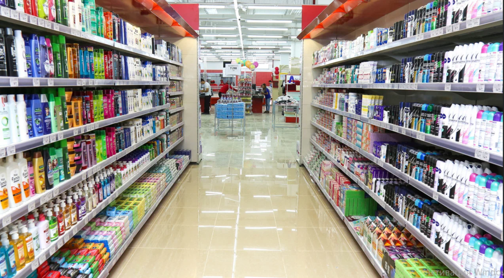

Korzinka

Haqida
Oziq-ovqat va kundalik ehtiyoj mahsulotlari supermarketi.
Xizmatlar
- Oziq-ovqat
- Maishiy tovarlar
- Tayyor ovqatlar
Aloqa ma'lumotlari
- Manzil
- kiritiladi
- Telefon
- +998 __ ___ __ __
- Ish vaqti
- kiritiladi
Aniq manzil va telefonni muassasaning rasmiy manbasidan kiriting.